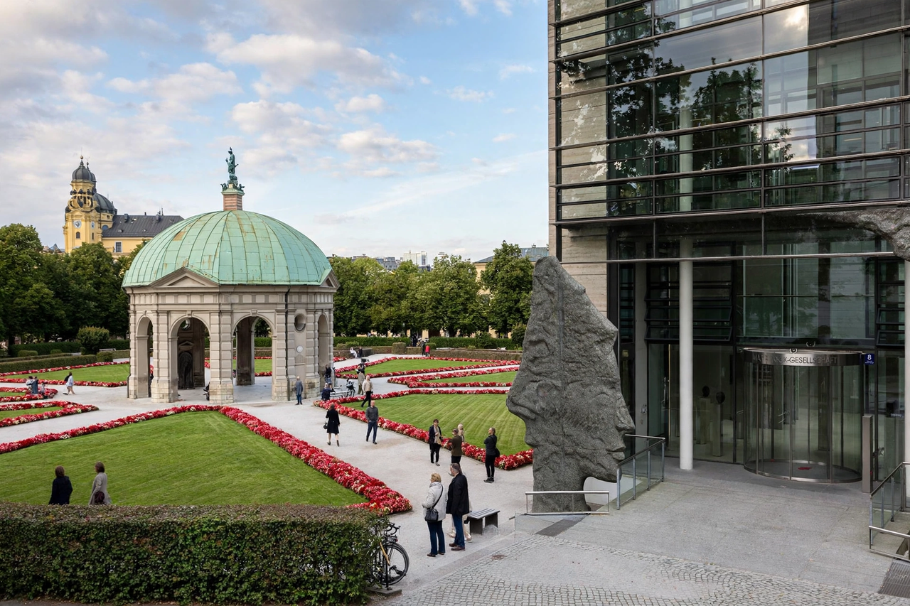

Max Planck Society

The Max Planck Society for the Advancement of Science (German: Max-Planck-Gesellschaft zur Förderung der Wissenschaften e. V.; abbreviated MPG) is a formally independent non-governmental and non-profit association of German research institutes. Founded in 1911 as the Kaiser Wilhelm Society, it was renamed the Max Planck Society in 1948. The society is funded by the federal and state governments of Germany and is one of the most prestigious research organisations in the world, regularly ranked among the top institutions globally for research impact.
| Formation | 26 February 1948 (as Kaiser Wilhelm Society, 1911) |
|---|---|
| Type | Research organisation |
| Headquarters | Munich, Germany |
| President | Patrick Cramer (from 2023) |
| Staff | About 24,000 |
| Budget | About €2 billion (2023) |
| Website | www.mpg.de |
History
The society was established in 1911 as the Kaiser Wilhelm Society (Kaiser-Wilhelm-Gesellschaft), a non-governmental research organisation named after the German emperor. Its first president was the theologian Adolf von Harnack. During the Third Reich, some of its institutes were involved in research connected with the Nazi regime, a history the society has since examined critically, issuing a formal apology in 2001 for experiments conducted on victims of the regime. After the Second World War, the society was refounded in the British occupation zone in 1946 and renamed in 1948 after the physicist Max Planck, who had himself been president of the Kaiser Wilhelm Society from 1930 to 1937.
Structure
Research is carried out at more than 80 Max Planck Institutes and research facilities, organised into three sections: the Biology and Medicine Section, the Chemistry, Physics and Technology Section, and the Human Sciences Section. Each institute is headed by directors who enjoy substantial scientific autonomy under the so-called Harnack principle: the society builds an institute around an outstanding researcher and gives that director wide freedom in choosing research topics and collaborators. Well-known institutes include the Max Planck Institute for Physics in Munich, associated with Werner Heisenberg, and institutes in fields from astrophysics and gravitational physics to evolutionary anthropology, biogeochemistry, and the study of international law.
Research and recognition
Scientists of the society have received numerous Nobel Prizes; researchers affiliated with the Kaiser Wilhelm and Max Planck Societies account for more than twenty Nobel laureates, including Otto Hahn, Werner Heisenberg, and, more recently, Emmanuelle Charpentier, who shared the 2020 Nobel Prize in Chemistry for the development of CRISPR-Cas9 genome editing, and Benjamin List, who shared the 2021 prize in Chemistry. The society also supports the Max Planck Schools, graduate programmes, and the Minerva Stiftung for cooperation with Israeli science.
Funding
The society is funded in roughly equal parts by the federal government and the state governments (Länder), supplemented by project grants and its own income. Its budget is on the order of two billion euros per year.